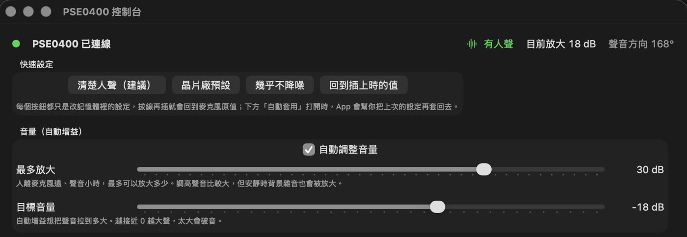

這篇在講什麼
我的會議麥克風降噪太強，原廠更新只有 Windows 版。同一個問題，我找了兩個 AI：第一個叫我去借 Windows 電腦，花了一個下午沒解決；第二個在 Mac 上自己來，更新韌體失敗了，但幫我寫出了 Mac 的控制軟體。
這篇記錄這兩條路的時間、我當時講的話，以及我怎麼看這件事。
- 設備的原廠工具只支援 Windows，自己用的是 Mac 的人
- 想知道遇到「只能照原廠做」的時候，還能怎麼跟 AI 談的人
- 一個真實案例的時間軸：兩條路各花了多久、卡在哪、最後得到什麼
- 兩條路各適合什麼情況
- 想自己試的人，文末有一段可以直接貼給 AI 的提示詞
起點：我想要可以自己調
我開會用的是一支 Philips PSE0400 會議麥克風。
9 月 21 日下午 1 點 21 分，我開始請 Codex（紀錄上的模型是 gpt-5.6-sol）處理。我一開始就講了兩件事：「我覺得它降噪太強，人聲聽不清楚，我想要可以調整。」「我用它錄語音備忘錄，居然沒辦法自動轉入。」
一分鐘後，我問：「你有辦法自己下載、改裝驅動嗎？」接著又說：「或者找官方驅動軟體，不用改韌體，做自己的驅動呢？」
第一條路：先借 Windows（9/21，大約 4 小時）
測過幾輪之後，13:50 我說：「改韌體吧，要不然基本就廢了。」
它的回答是：原廠的刷寫工具只支援 Windows，在 Mac 上刷風險太高，它不會盲刷，請我把麥克風接到一台 Windows 電腦。它也說，如果刷完還是一樣，就建議退役或更換，不必再花時間寫驅動。
13:51 我接受了：「所以我需要一個 win？」「好吧，那你幫我抓韌體、驅動，我去借 win。」
下午 4 點 56 分我借到筆電，照它的步驟一步一步按。更新程式一直找不到裝置。我問：「你沒辦法接手嗎？」它沒辦法操作另一台電腦。17:33，刷寫程式在 Windows 上解壓後不見了，當時懷疑是被防毒隔離，沒有確認完，那天就停在這裡，麥克風沒有解決。這四小時包含前面的測試、下載更新包和借電腦，真正在 Windows 上操作大約 37 分鐘。
第二條路：在 Mac 上自己來（9/24，大約 1 小時做出控制軟體）
9 月 24 日下午 3 點 37 分，同一支麥克風，我換成 Claude Code 的 Opus 5.5：「你能不能幫我更新這個菲利普的會議麥克風。」我跟它說：「我用其他電腦就沒辦法。」
它先把原廠更新程式拆開來讀，再照著寫出 Mac 版的刷寫工具。動手前它講清楚了風險：這個更新可能不適合我這一支，而且沒辦法先備份。15:59 我選了現在刷。
更新韌體失敗了，麥克風一般插線開不了機。16:07 我問：「沒辦法再更新一次看看嗎？」16:12：「你去找韌體呀。」16:13：「你沒辦法找到合適的嗎？或者你自己寫。」16:17 我說：「反正有比較好就可以。」
16:20 它把麥克風切回出廠時留著的那一份韌體，救回來了，收音也比原本大。只是回不到原本的模式，現在一插上就是出廠版。
16:33，它幫我寫的 Mac 控制軟體完成第一版，可以自己調降噪。我用它錄了一段，效果不錯。

9/24 能這麼快，有一部分是因為 9/21 已經下載好更新包、量過音量，也確認問題出在麥克風本身。
- AI 自動跑出錯了怎麼收拾？：設計能容錯的 Loop 這一段只講刷壞之後救回來，那篇講事前怎麼留後路、先小試、分批做。
燈號：用的人說了算
出廠版本的燈一直紅藍閃爍。我說：「燈閃爍很麻煩。」我希望「紅燈是錄音，藍燈是待機才對」。
麥克風的燈改不了，就改成在電腦上方工具欄放一顆圓點：錄音時紅色，待機時藍色。一開始它做成可以拖動的，我說：「我是說，就自動在上面就好了，不要拖移的。」16:52 改好，固定在工具欄上。從 15:37 開口到這裡，大約 1 小時 15 分。
兩條路，各適合什麼時候
| 先借 Windows，照原廠做 | 在 Mac 上自己寫 | |
|---|---|---|
| 這次的結果 | 花了一個下午，沒解決 | 更新韌體失敗，控制軟體成功 |
| 適合 | 原廠確認更新適用、設備號碼對得上、已經有確認過的備份或救援方法 | 自己的設備、原廠工具用不了、接受可能弄壞，而且已經有試過可用的救援方法 |
| 代價 | 要有 Windows 電腦，卡住時 AI 沒辦法接手另一台；這次連原廠的備份功能都是空的 | 可能刷壞，要有救回來的方法 |
我覺得這是很好的案例。之前用 gpt-5.6-sol，它沒辦法解決我的問題，一直說只能用 Windows 先更新過韌體再說，一定要我去借 Windows 電腦。這次用 Opus 5.5，更新韌體失敗了，但它幫我寫出了 Mac 的控制軟體。
公平地說，9/21 那條路是在更新適不適用、能不能備份都還不確定的時候，選擇不在 Mac 上冒險刷。9/24 能繼續往下走，是因為先讀懂了原廠程式，也找到麥克風裡還能開機的出廠版本。
保固內或公司的設備，兩條路都先別自己走，交給原廠或資訊人員。
這不算改造硬體
一開始我以為這叫改造硬體，後來想想不算：沒拆機，韌體也不是我自己寫的，用的是麥克風出廠就有的那一份。實際做到的，是讓 AI 寫了在 Mac 上跟麥克風溝通的控制軟體。
我開始嘗試這件事了。
附錄：想自己試，可以先貼給 AI 的提示詞
展開提示詞
- AI 自動跑出錯了怎麼收拾？：設計能容錯的 Loop 這次刷壞能救回來，靠的是出廠版；那篇講怎麼在事前就把後路留好
- OpenAI 出了官方外掛，讓 Codex 能接到 Claude Code 一起工作｜codex-plugin-cc 這次兩條路分別用了 Codex 和 Claude Code；那篇講兩家怎麼一起工作
- 換電腦，設定又要重來一次嗎？：我把 OBS 交給 AI，一個選項都沒點過 往前：同樣是把設定整件交給 AI，用在軟體上
- 會議有錄音也有逐字稿，為什麼事後還是查不到重點？｜我的會議記錄 Agent 工作流 往後：錄音收清楚之後，接著怎麼變成會議記錄
我是江江教練
隱性知識提煉師、AI 應用規劃師。我每月固定舉辦兩場免費線上講座，分享實戰經驗與方法論。
對 AI 與知識管理有興趣、想持續學習，或是有顧問需求，都歡迎先從 LINE 社群開始。